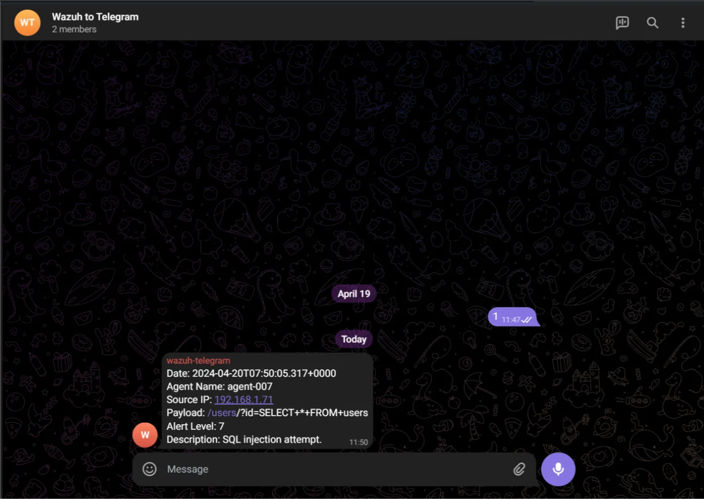

In this article, I will explain how to route Wazuh alerts to Telegram.
1. Creating the Bot
First, you need to activate a Telegram bot using BotFather.

In the section marked in red in the image, you will be provided with an HTTP API Token (I have hidden mine for security purposes).
2. Getting the Chat ID
Next, create a group and add this bot to it.

In the section marked above, you can see the group's Chat ID.
Alternatively, you can get the Chat ID by adding your Bot API token to the URL below and sending a request. It will return a response in JSON format. You can also use Sean Bradley's script to obtain the Chat ID.
- API URL:
https://api.telegram.org/bot<bot API>/getUpdates - Guide: How to get a Chat ID of a Telegram Group
3. Setting up the Script
Next, we need to run a script for Wazuh to send the alerts. For this, I will use the script from the Demos repository linked below:
Step 3.1: Create the files
Navigate to the /var/ossec/integrations directory.
-
Create a file named
custom-telegram(this will be the bash script launcher). -
Create a file named
custom-telegram.pyand copy the code below into it.
The script below is a version of the Demos script that I adapted for my system and customized to make the output look cleaner.
Python Script (custom-telegram.py):
#!/usr/bin/env python3
import sys
import json
import requests
from requests.auth import HTTPBasicAuth
# CHAT_ID="xxxx"
CHAT_ID = ""
# Read configuration parameters
alert_file = open(sys.argv[1])
hook_url = sys.argv[3]
# Read the alert file
alert_json = json.loads(alert_file.read())
alert_file.close()
# Extract data fields
date = alert_json['timestamp'] if 'timestamp' in alert_json else "N/A"
agent = alert_json['agent']['name'] if 'name' in alert_json['agent'] else "N/A"
srcip=alert_json['agent']['ip'] if 'ip' in alert_json['agent'] else "N/A"
payload = alert_json['data']['url'] if 'url' in alert_json['data'] else "N/A"
alert_level = alert_json['rule']['level'] if 'level' in alert_json['rule'] else "N/A"
description = alert_json['rule']['description'] if 'description' in alert_json['rule'] else "N/A"
# Generate request
msg_data = {}
msg_data['chat_id'] = CHAT_ID
msg_data['text'] = f"Date: {date}\nAgent Name: {agent}\nSource IP: {srcip}\nPayload: {payload}\nAlert Level: {alert_level}\nDescription: {description}"
headers = {'content-type': 'application/json', 'Accept-Charset': 'UTF-8'}
# Send the request
requests.post(hook_url, headers=headers, data=json.dumps(msg_data))
sys.exit(0)Important: Make sure to add your ID (usually starting with - for groups) to the CHAT_ID variable in the script.
4. Configuring Wazuh
The only remaining part is to add the API bot configuration to Wazuh.
- Open the
/var/ossec/etc/ossec.conffile. - Add the configuration shown at the bottom of the Demos page (linked above) inside the
<ossec_config></ossec_config>tags. - Note: Pay close attention to indentation/spaces to avoid system errors.
5. Permissions and Restart
We finalize the configuration by assigning the necessary permissions to the files and restarting the manager.
chown root:wazuh /var/ossec/integrations/custom-telegram*
chmod 750 /var/ossec/integrations/custom-telegram*
systemctl restart wazuh-manager
6. Verification
The notification received when I performed a test SQLi attack looks like this:
